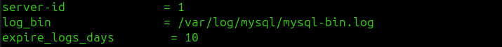
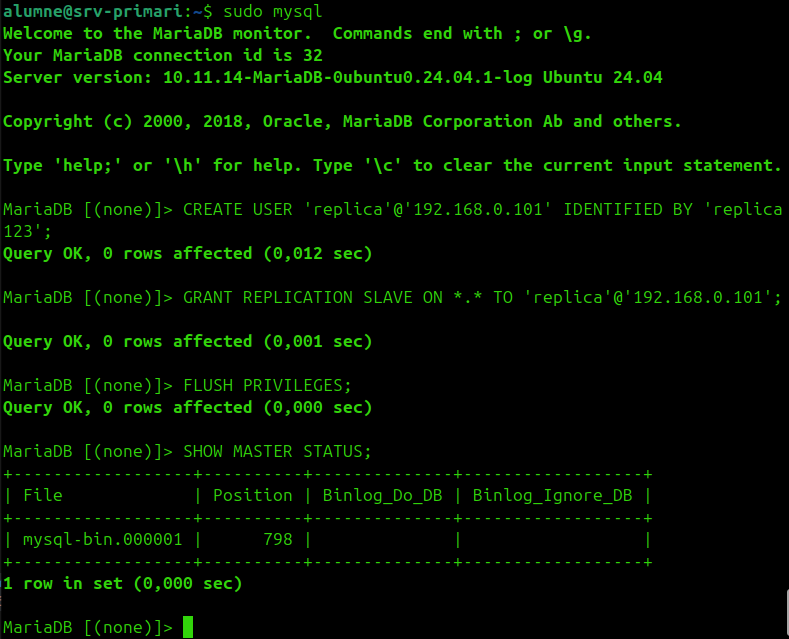
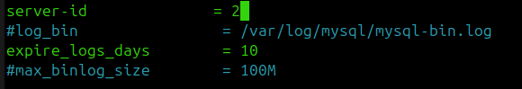
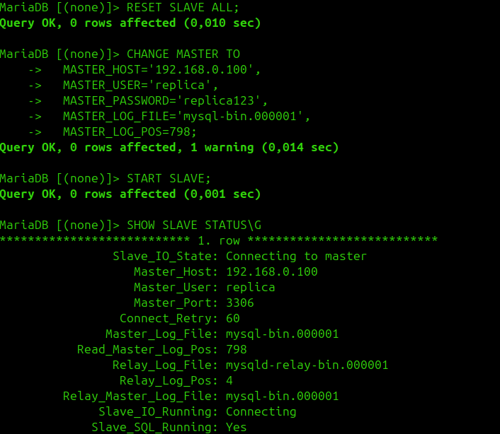
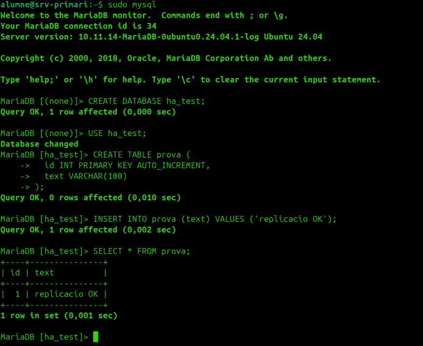
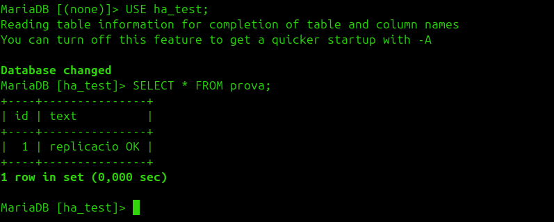

HA de MariaDB¶
MariaDB requereix replicació de dades entre nodes, no només la VIP.
1. Configurar el srv-primari¶

2. Crear usuari de replicació¶
Al srv-primari:
CREATE USER 'replica'@'192.168.0.101' IDENTIFIED BY 'replica123';
GRANT REPLICATION SLAVE ON *.* TO 'replica'@'192.168.0.101';
FLUSH PRIVILEGES;
SHOW MASTER STATUS;

Apuntar els valors de File i Position que retorna SHOW MASTER STATUS per al pas 4.
3. Configurar el srv-secundari¶

4. Activar la rèplica al secundari¶
STOP SLAVE;
CHANGE MASTER TO
MASTER_HOST='192.168.0.100',
MASTER_USER='replica',
MASTER_PASSWORD='replica123',
MASTER_LOG_FILE='mysql-bin.000001',
MASTER_LOG_POS=TU_POSICIO;
START SLAVE;
SHOW SLAVE STATUS\G
Ha de sortir Slave_IO_Running: Yes i Slave_SQL_Running: Yes.

5. Comprovació¶
Creació d'una base de dades de prova al primari:

Apareix automàticament al secundari:

sequenceDiagram
participant P as srv-primari (master)
participant S as srv-secundari (slave)
P->>P: CREATE DATABASE prova
P->>S: Replicació binlog
S->>S: Aplica CREATE DATABASE prova
Note over P,S: Les dues BD queden sincronitzades